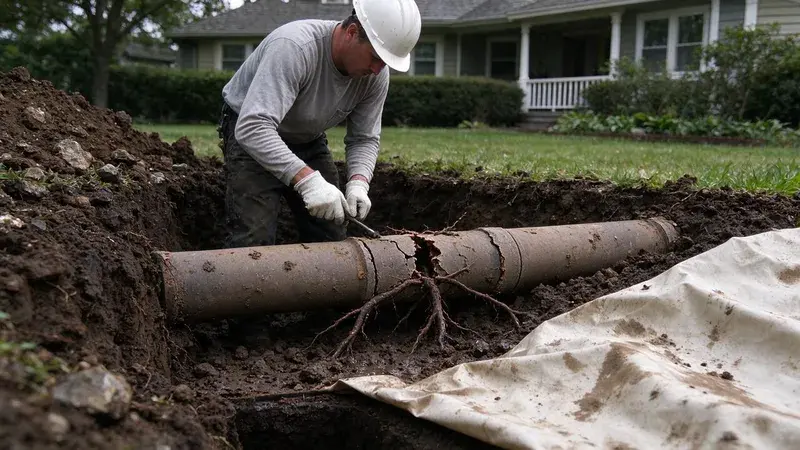

The Hidden Threat: Understanding Underground Pipe Damage
As homeowners across Alaska know, what's out of sight can often be out of mind, until a problem rears its head. Underground pipes, carrying everything from fresh water to wastewater, are critical to your home's function. When these pipes get damaged, the consequences can range from minor annoyances like low water pressure to major headaches like yard flooding or foundation issues. Understanding the common causes of this damage helps you recognize the signs early and consider the right solutions.
Common Culprits Behind Subterranean Pipe Problems
Several factors contribute to the breakdown of underground piping. One of the most frequent issues we see is tree root intrusion. Tree roots are constantly seeking moisture and nutrients, and a tiny crack or a loose joint in a pipe can be an open invitation. Once inside, these roots grow, expanding the crack and finally blocking the pipe entirely. Another significant factor is ground movement.
Glacial silt, gravel, and rock are common here, so excavating for sewer or water line repairs can take extra equipment than in milder places.
Soil with clay content can shift through cycles of drought and heavy rain, putting stress on rigid pipes and leading to breaks or misalignments. Corrosive soil conditions, often influenced by alkalinity or acidity, can also speed up the deterioration of older metal pipes, like cast iron or galvanized steel, which are still common in many older homes.
Aging Infrastructure and Material Weakness
Many homes, particularly those built before the 1980s, rely on older piping materials. Cast iron, for example, is prone to corrosion and cracking over time, especially when exposed to certain soil compositions or aggressive wastewater. Orangeburg pipe, a fiber conduit material popular in the mid-20th century, is notorious for collapsing, deforming, or disintegrating when saturated with water or subjected to pressure. Even PVC pipes, while more durable than their predecessors, can be susceptible to damage from excessive ground movement, improper installation, or impacts from heavy equipment during landscaping or construction. Regular inspections can help identify these material weaknesses before they become catastrophic failures.
Newer construction across Alaska leans on PEX, which handles freezing better than rigid pipe but still needs careful insulation and routing.
Detecting the Undetectable: Signs of Underground Pipe Issues
Identifying underground pipe damage can be tricky because the symptoms aren't always obvious. However, there are several red flags Alaska homeowners should watch for. Unexplained wet spots in your yard that don't dry up, even during prolonged dry spells, often signal a leak in a water supply or sewer line. A sudden, significant increase in your water bill without a change in usage is another strong indicator of a hidden leak. Inside your home, slow drains across multiple fixtures, gurgling sounds from toilets or drains, or the persistent smell of sewage may point to a blockage or break in your main sewer line. Foundation cracks or shifting can also be a serious symptom of persistent water leaks undermining your home's structural integrity.
Modern Repair Solutions for Lasting Results
Gone are the days when underground pipe repair automatically meant extensive trench digging across your entire yard. Today, advanced trenchless technologies offer less invasive and often more cost-effective solutions for many types of damage.
- Pipe Lining (Cured-In-Place Pipe, CIPP): This method involves inserting a flexible, resin-saturated liner into the damaged pipe. The liner is then inflated and allowed to cure, creating a new, strong pipe within the old one. It's an ideal solution for cracks, small breaks, and root intrusion, often requiring only one or two access points.
- Pipe Bursting: For severely collapsed or corroded pipes that need full replacement, pipe bursting is an efficient trenchless option. A new pipe is pulled through the old one, simultaneously breaking apart the old pipe. This method maintains the original pipe's path and usually requires very little excavation at the entry and exit points.
- Spot Repairs and Sectional Lining: Sometimes, only a small section of a pipe is damaged. Modern techniques allow for targeted repairs, either through small-scale excavation or by lining just the affected segment, reducing disruption and cost.
The choice of repair method depends on the extent and type of damage, the pipe material, and your property's specific conditions. Our team at CKN Plumbing uses advanced diagnostic tools, like sewer camera inspections, to accurately pinpoint the problem and recommend the most appropriate and durable solution for your Alaska home.
When to Call a Professional
If you suspect underground pipe damage, it's important to act quickly to prevent further issues and costly repairs. DIY attempts at diagnosing or fixing these complex problems can often lead to more significant damage. For dependable, expert service, contact CKN Plumbing. Our experienced plumbers are equipped with the latest technology and knowledge to accurately diagnose and efficiently repair all types of underground pipe damage. Don't let a hidden problem become a disaster. Give us a call today at (928) 470-9007 for a thorough inspection and professional advice. We serve homeowners across Alaska, providing peace of mind with lasting plumbing solutions.
Need a licensed plumber in Alaska?
CKN Plumbing answers 24/7 and offers same-day service across Alaska.